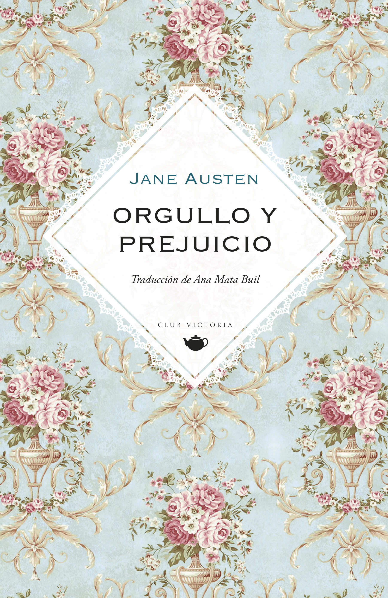

Reseña del mes de Diciembre
Todos hemos oído o dicho alguna vez «quiero un hombre como el señor Darcy». Sin embargo, es posible que nos hayamos dejado engañar por la dulzura de Matthew Macfadyen (quien lo interpretó en 2005), porque lo cierto es que el personaje original de Orgullo y prejuicio dista mucho de ser el hombre ideal.
Solo hay un motivo por el que Lizzy Bennet estaría en la misma habitación que el engreído, orgulloso y descortés señor Darcy, y ese motivo no tiene nada que ver con su atractivo o su inmensa fortuna. Si Elizabeth tolera (y a duras penas) su presencia, es porque Darcy es el mejor amigo del señor Bingley, un encantador caballero muy especial para su hermana, la adorable y bondadosa Jane Bennet.
Que Orgullo y prejuicio es una novela de amor de época lo sabe todo el mundo. Lo que quizá muchos no intuyan es que no se trata de la típica historia de flechazo en la cual el caballero perfecto se dedica a cortejar a una insulsa dama cuyo corazón tiene ganado desde el principio. Nada más lejos de la verdad, gracias, básicamente, al carácter de la protagonista, Elizabeth Bennet, una joven independiente, lista y decidida. No hay que olvidar que Orgullo y prejuicio se publicó en 1813, y en aquella época un personaje femenino de estas características suponía una verdadera revolución literaria e incluso ideológica. Afortunadamente y en contra del arquetipo de su tiempo, Lizzy no está cegada por las ansias de conseguir un buen marido (como su madre o sus hermanas menores). Para ella, ningún estatus social merece una vida de infelicidad al lado de un hombre al que no ama. Y si hay alguien a quien no podría estar más lejos de amar, ese es el señor Darcy.
Sin embargo, los acontecimientos inesperados que se van sucediendo en la novela hacen que las personalidades de Elizabeth y Darcy evolucionen de manera sorprendente; un cambio que la autora supo plasmar con gran realismo y credibilidad.
Esta famosa novela de Jane Austen es, sin duda, una historia romántica, pero más allá de eso es, como su título indica, un relato sobre lo que puede arrebatarte tu propio orgullo y todo aquello, bueno o malo, que la venda de los prejuicios puede impedirte ver